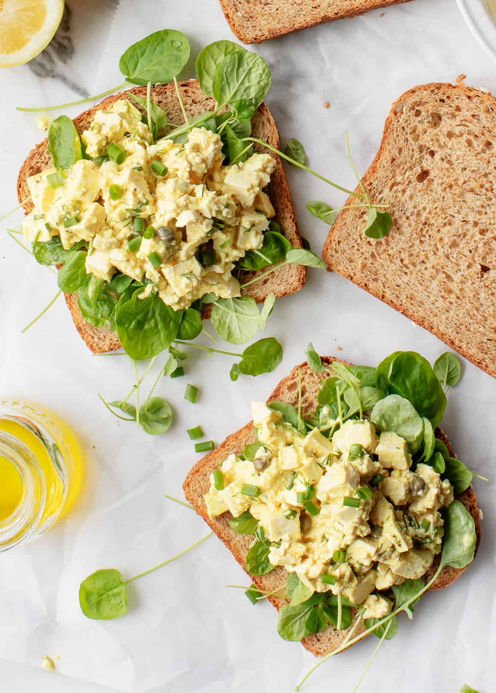

The Little Kitchen
A family food blog with easy, well tasted, family approved recipes!
Lunch Ideas

- Healthy Lunch Wraps
- Best Egg Salad

Ingredients :
- ¼ cup mayonnaise
- 1 teaspoon extra-virgin olive oil
- 2 teaspoons Dijon mustard
- 1 teaspoon capers
- 1 teaspoon fresh lemon juice
- 1 small garlic clove, minced
- ¼ teaspoon turmeric
- ¼ teaspoon sea salt
- Freshly ground black pepper
- 6 hard boiled eggs, diced
- Pinches of celery seed
- 2 tablespoons chopped fresh dill
- 2 tablespoons chopped fresh chives
Instructions :
- In a small bowl, whisk together the mayonnaise, olive oil, mustard, capers, lemon juice, garlic, turmeric, salt, and several grinds of black pepper.
- Mix in the eggs, then stir in the celery seed, dill, and chives. If desired, lightly mash the mixture if it's too chunky. Chill until ready to serve.
- Veggie Grain Bowl
- Sesame Soba Noodles